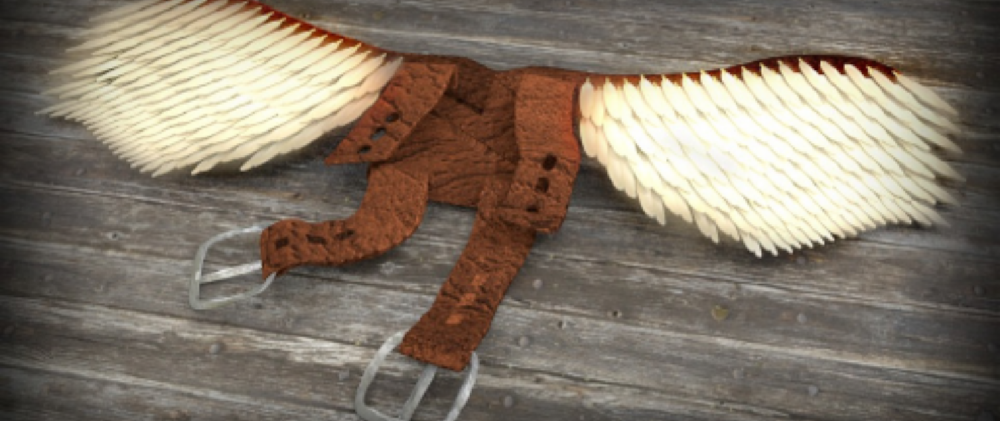

① Voorkennis activerenWD2_03.03.01 – situeren

Break On Through to the Other Side
P. Ovidius Naso, Metamorphoses VIII, 183–192 · Daedalus zoekt een uitweg
② Doel verduidelijkenWD2_03.02.01 – tekst begrijpen
Context
Wat Minos niet bezit
Daedalus zit gevangen, maar weigert te aanvaarden dat Minos’ macht overal reikt: als land en zee afgesloten zijn, blijft volgens hem de lucht nog open. In deze eerste Latijnse tekst zien we hoe die gedachte tegelijk bevrijdend en gevaarlijk wordt, want ontsnappen betekent voor Daedalus meteen ook: een onbekende kunst uitvinden en de natuur veranderen.
Lectuuranalyse — vraag bij deze passage
183Daedalus interea Creten longumque perosus
184exilium tactusque loci natalis amore
185clausus erat pelago. “Terras licet” inquit “et undas
186obstruat, at caelum certe patet! Ibimus illac:
187omnia possideat, non possidet aëra Minos.”
188dixit et ignotas animum dimittit in artes
189naturamque novat. Nam ponit in ordine pennas
190a minima coeptas, longam breviore sequenti,
191ut clivo crevisse putes: sic rustica quondam
192fistula disparibus paulatim surgit avenis.